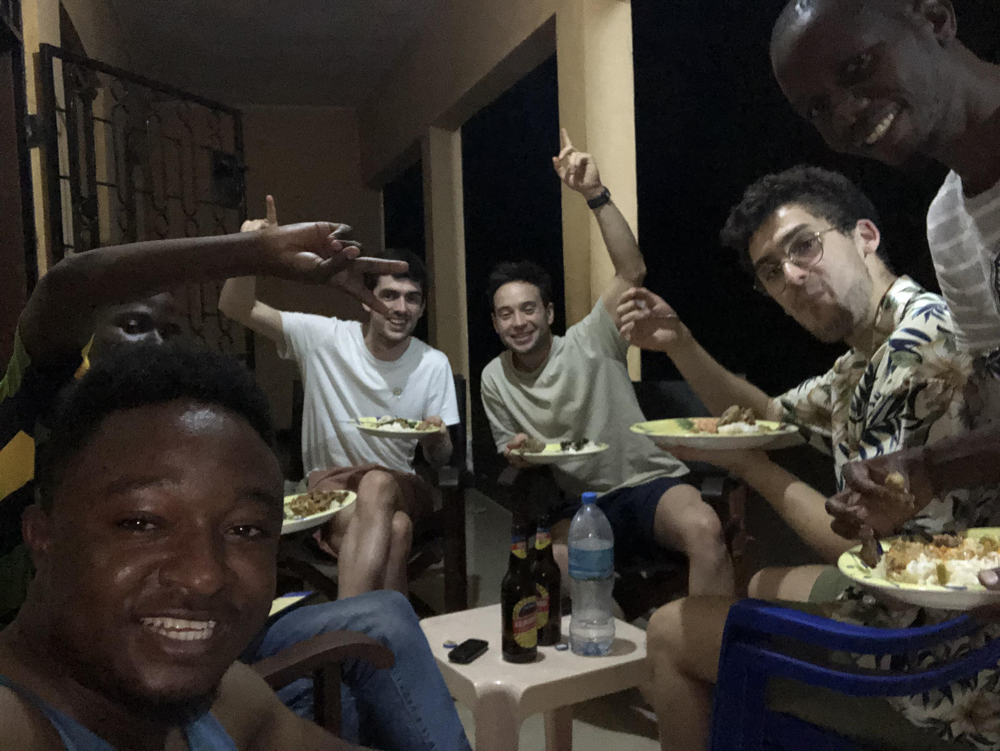
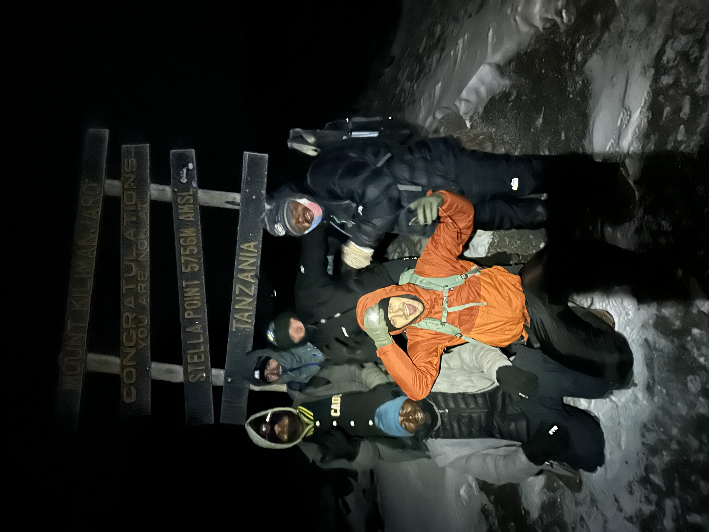

Dag 1 - De aanloop
10km - 1900m > 3000m
We vertrekken naar het startpunt van de Machame route in een busje dat duidelijk te klein is voor ons en
onze voltallige crew. Voor het eerst beseffen hebben hoe groot die wel niet is: 9 dragers, een kok en
twee gidsen zullen ons de komende 7 dagen vergezellen. We komen aan bij de poort, en moeten nog even
wachten, omdat de dragers genoeg voor ons willen vertrekken: Ze staan er op dat alle tenten klaar staan
op het moment dat we op de kampplaats arriveren. We blijven dan maar wachten aan het infocentrum, samen
met een aantal andere groepjes trekkers (grotendeels Europeanen), tot onze gids ons komt
halen. We babbelen een beetje, maar willen vooral graag vertrekken.
Ongeveer 40 minuten later komt Kingu, onze assistent-gids, ons halen. Vol goede moed doen we onze eerste
hoogtemeters, op dat moment nog over asfalt. We gaan de bossen in, het lijkt wel een soort regenwoud, de
bomen torenen boven ons uit en maar af en toe kunnen we een glimp opvangen van onze omgeving. Al snel
merken we dat het tempo van de gids ons wat te laag ligt. “Pole pole”, “traag traag”, hadden we al van
iedereen gehoord, maar zo traag? Dat konden wij jonge athlethische gasten toch niet maken, we hadden
immers onze Strava opgezet!

Om 17u komen we aan op de eerste kampplaats, een half uur voor Kingu. Een rondje aapjes spotten later
vertelt hij ons dat het vandaag wel de laatste keer zou zijn dat hij ons zo onze gang zou laten gaan.
Vanaf morgen was het geen speeltuin meer!
We denken op dat moment toch misschien allemaal een beetje in onszelf: Kom, als we vandaag 1100
hoogtemeters achter de rug hebben, dan wordt de rest toch een lachtertje. Maar goed dat we dat niet
luidop gezegd hebben :)
Dag 2 - De microbe
7km - 3000m > 3900m

We staan op, goed uitgerust en klaar voor de tweede dag. Bij het vertrekken schijnt de zon prachtig en
zien we voor het eerst sinds onze aankomst in Tanzania een glimp van wat ons re wachten staat: De top
van de Kilimanjaro komt kort achter de bomen uit. Hij lijkt bijna klein ban zo ver! Na gisteren is ons
vertrouwen dan ook enorm toegenomen: Als die 1100 hoogtemeters van gisteren zo goed meevielen, zal de
rest toch ook wel lukken zeker? Misschien is dat vertrouwen een beetje tot hoogmoed aan het vervellen…
In ieder geval begint de dag goed. We laten het regenwoud achter, dat plaats maakt voor kleinere, droge
boompjes van een meter of twee hoog. Dat brengt veel mooie zichten met zich mee, en we stijgen vlotjes
in de ochtend! Maar met dat stijgen wordt het al snel kouder, er trekt een mist op en we doen voor het
eerst een truitje aan.

De mist brengt een soort onheilspellend gevoel met zich mee. En niet geheel onterecht, want Cédric wordt
elk uur een beetje stiller en het wordt duidelijk dat hij zich niet al te best voelt. Hoofdpijn en
buikpijn zijn de klachten. We zijn nog maar net boven de 3000 meter uitgestegen, dus het lijkt ons sterk
dat het aan de hoogte ligt, zeker gezien Ced zijn ervaring met trektochten door hooggebergte…
We proberen de moed er in te houden. We komen reeds om 13u aan op de kampplaats. Korte etappes, met niet
teveel hoogtemeters tegelijk, zijn goed voor de acclimatisering en ook de komende drie dagen zullen er
gelijkaardig uitzien. Ced gaat een dutje doen in de tent terwijl Michiel en ik nog even een korte extra
klim.

Ons doel is een grot, hoogte 1m60, nauwelijks 15 vierkante meter groot. Vroeger, voor er hier met tenten
werden meegenomen, sliepen hier tot 100 mensen tegelijk in dergelijke grotten, om te schuilen voor de
natuur in hun trektocht naar boven. Of dit verhaal een beetje quatch was weten we niet, maar we geloven
onze gids maar op zijn woord en keren terug naar de kampplaats, waar in het jammer genoeg niet beter
gaat met Cédric. In tegendeel, hij heeft duidelijk koorts en voelt zich barslecht.
We waarschuwen de gids, die ons bevestigt dat het moeilijk aan de hoogte kan liggen. We zoeken naar
andere oorzaken: Zou het liggen aan het overheerlijke maar weliswaar zeer rudimentaire diner in het huis
van onze chauffeurs, eergisteren? Of gewoon aan het feit dat de griep rondging op de Wonka-office, in de
week voor ons vertrek?
We hebben er het raden naar. De moed zinkt ons een beetje in de schoenen, maar onze gids, Manase, stelt
ons gerust, en met een wijselijk "Hakuna Matata" stuurt hij ons vroeg naar bed.

Dag 3 - Het keerpunt
10km - 3900m > 4600m > 4000m
Acclimatisatiedag 2. Vandaag moeten we over “Lava Tower Camp”, 4600 meter hoog, en de eerste keer dat we
echt de hoogte zouden kunnen voelen. Normaal gaat deze dag ook gepaard met prachtige uitzichten, maar het ziet er niet naar uit
dat we daar veel van gaan kunnen zien.

En bovenop deze mindere weersomstandigheden is Ced verre van beter geworden. Met koorts, hoofdpijn,
misselijkheid, buikpijn en diarree als symptomen die eerder erger worden dan verbeteren, twijfelt hij er
aan of hij het zal halen, en stelt deze dag als ultimatum om te beslissen om terug te keren. En ook bij
mij beginnen hoofdpijn en diarree de kop op te steken…
We staan er dus absoluut niet goed voor. Onze motivatie ligt een beetje op een dieptepunt als we dan
toch maar door de miezer aan onze wandeling beginnen. We komen langs “de grootste Kilimanjaro-Cactus”
van heel de berg, maar je kunt misschien aan onze gezichten aflezen dat hij ons maar matig kan bekoren.
Cédric en ik komen tegen 17u aan in Baranco Camp. Op dat moment heeft Michiel, die zelfs los van onze
ziekte duidelijk meer athletisme in zich heeft (zijn bezoekjes aan Animo hebben duidelijk zijn vruchten
afgeworpen), ons al eventjes achter gelaten om aan zijn eigen tempo de route af te werken.

Welke gevoelens er schuilgaan achter deze glimlachende, of misschien beter grim lachende gezichten? We
zijn uitgeput, nog steeds eigenlijk echt niet in staat er het positieve van in te zien, maar toch: We
hebben vandaag gehaald. Morgen en overmorgen staan nog veel gemakkelijkere etappes op het programma, en
als we uitgaan van een klassieke “buikgriep”, zou die toch stilletjes aan moeten beginnen uitwerken. Op
hoop van zege.
Dag 4 - Een sprankel hoop
5km - 4000m > 4000m
We beginnen met het slechte nieuws: De weersomstandigheden verslechteren nog een stukje. De vorige nacht
hadden we nog droog kunnen genieten van een ver uitzicht over Moshi Town, en achter ons de top van de
Kili, weliswaar met onheilspellende bliksem en donder op de achtergrond. Maar tegen deze ochtend is het
duidelijk dat de miezer van gisteren zal transformeren tot een regen die soms gietend over ons neer zal
komen.
Alhoewel: We hadden ons hier op voorbereid! Alle drie zijn we in de weken voor deze reis in de Decathlon,
AS Adventure en Kariboe, gepasseerd, om het nodige materiaal in te slaan om ons te beschermen tegen de
onvoorspelbare weersomstandigheden van de Kilimanjaro. Dus hier kun je Cédric in volledig
regenbestendige outfit de berg zien trotseren:
En dan komt nog het goede nieuws: Wat zien we op deze foto? Staat er zowaar een brede lach op zijn
gezicht gesmeerd? Dat klopt!
Hij voelt zich immers al een stuk beter dan gisteren. Alhoewel er nog steeds veel wc-papier en
allerhande alternatieven per dag door gaat (Michiel zit ondertussen ook met een zeer onregelmatige
stoelgang), is Ced tot een niveau gekomen waarop een paracetamol hem meer dan ok doet voelen.
Daarbovenop is het een heel korte dag. Na 3u30 wandelen komen we al aan op de kampplaats, op dezelfde
hoogte als gisteren. Manase tipt Michiel en Cedric die het al verschillende nachten koud hebben om een
bidon warm water in onze slaapzak te steken. Het is de eerste van vele gouden tips die hij op ons zal
loslaten tijdens deze cruciale fase van de beklimming.
We spelen nog wat spelletjes, genieten van een opnieuw overheerlijke maaltijd van Tulo, onze kok, en dan
zou het tijd zijn voor de avond. Maar voor we ons bed uit kruipen valt het op hoe de lucht opklaart, en
de wolken plaats maken voor een van de mooiste uitzichten tot nu toe.
Dag 5 - De voorbereiding
7km - 4000m > 4600m
T minus one. The day before.
Opnieuw hebben we lang geslapen, met weliswaar veel wakkere momenten, maar als de ochtend aanbreekt,
wordt het duidelijk dat de Kilimanjaro ons toelacht, en wij haar. Dit kan niet meer stuklopen!

Het is al bij al maar een korte klim, en vandaag lijkt het wel of het wandelen vanzelf gaat. Voor we het
goed en wel beseffen komen we aan op Barafu Camp, oftewel “base camp”.
Barafu is Swahili voor “ijs”. De naam heeft het kamp te danken aan haar hoogte boven de sneeuwgrens,
alhoewel die door de klimaatopwarming nu nét boven het kamp ligt.

Ondanks het gebrek aan sneeuw is het verre van een gezellige kampeerplek. Vegetatie hebben we al
even niet meer gezien, we moeten het hier stellen met ruige rotsen en gruissteen, met slechts hier en
daar een aantal vlakke plekjes waar plaats is voor tenten. Weinig bescherming dus voor de wind die
constant inbeukt op onze tenten. Regen wisselt af met vlagen van hagel en sneeuw.
Deze onherbergzame plek zal deze nacht het startpunt vormen van onze poging om de Kilimanjaro officieel
te overwinnen.
We krijgen de briefing van Manase: Vanavond staan we op om 23u ‘s nachts, om stipt om middernacht te
vertrekken. De bedoeling is om nog voor zonsopgang op de top te zijn. Dat zijn dus 1300 hoogtemeters in
het donker, bij temperaturen van -15 graden Celsius! Enkele punten waar we op moeten letten:
-
Onze Camelbags zullen gaandeweg bevriezen. Stop een aparte drankbedon omgekeerd in een aantal sokken
in je rugzak. Ook die zal bevriezen, maar op die manier langs de onderkant waardoor je er nog van
kan drinken bij de afdaling.
- Je gaat hoofdpijn krijgen, dat hoort er bij. Neem een aspirine op voorhand en bijt er door heen, pas
als je duizelig begint te worden, wordt het echt gevaarlijk.
- Als je moet overgeven, laat dat maar komen. Meestal heb je meer energie erna als ervoor.
- Enkel wij en de twee gidsen gaan tot boven. De rest van de crew blijft in Barafu Camp. Er komt wel
nog één drager mee. Moest het met één van ons drie zo slecht gaan dat het er vroegtijdig opzit, kan
deze persoon mee naar beneden met hem en blijft de rest van de groep voltallig.
- We blijven maar vijf minuten tot een kwartier op de top. Langer, en het zou ons wel eens te veel
kunnen worden qua hoogteziekte.
Om maar niet te zeggen: Het gaat een helse nacht worden.
Dag 6 - Deel 1: De Top
4km - 4600m > 5895m
Natuurlijk zijn we alle drie al wakker tegen half elf. Piekerend denken we elk apart in onze slaapzak na
of we zeker alles mee hebben, genoeg lagen aan hebben, herhalen we nog eens waar alles ligt, ook al
hebben we alles gisteren al tot in de puntjes voorbereid.
Om 11u stipt staat Manase aan onze tent. Het circus kan beginnen. We trekken alle lagen kleding aan die
we hebben voorzien: een thermische onderlaag, merino wollen shirt (aanrader voor elke wandeltocht, maar
€30 in de Decathlon!), fleece, donsjas, en een regenjas tegen de wind. Nog een laatste kleine hap, en we
gaan er op uit, op dat moment nog onder een maanverlichte hemel.
We hebben geen foto’s van de weg naar omhoog, dus woorden zullen moeten volstaan om onze klim te
beschrijven. Net zoals de vorige vier dagen is het tempo traag. Maar deze keer is het ook effectief heel
duidelijk dat we elke kleine stap die we sneller nemen dan het tempo van de gids, meteen moeten bekopen,
en een aantal seconden volledig buiten adem zijn. Op het gemak dus!
Maar door dat trage tempo warmen we wel niet echt op. De twee paar sokken die we aanhebben blijken al
snel geen overbodige luxe, en mijn tenen beginnen al snel even koud aan te voelen als na een paar uur
buiten op terras bij Chez Richard in putje winter. Bij Michiel zijn vooral zijn handen die hem parten
spelen. We houden grotendeels onze handen (inclusief 2 paar handschoenen) in onze zakken, maar het
parcours is soms technisch en elke keer als we die er uithalen voelen we ze een beetje meer afkoelen.
Voor de rest valt het al bij al nog mee, onze lagen zijn dik genoeg om het eerste gedeelte op te
geraken. Tot zowel Michiel als ik op een bepaald moment opnieuw naar de wc moeten. Hier waren we voor
gewaarschuwd, onze maag zou geen rekening houden met de kou en wel eens genadeloos kunnen toeslaan in de
nacht. Op beide momenten was er weinig tot geen beschutting te vinden, dus is er in volle wind naar de
wc gegaan door ons beiden. Ik denk dat weinig mensen op aarde die nacht koudere billen hebben gehad dan
wij twee…
Onze dafalgans zijn er allemaal al doorgegaan bij onze ziekte van het begin van de reis. Maar gelukkig
hebben we alle drie een aspirine gekregen van drie Duitsers die de tocht gisteren gemaakt hadden -
“Exhausting”, was het enige woord waar ze op konden komen toen we hen vroegen hoe het voor hen geweest
was. Op hun aanraden nemen we die aspirines zodra de hoofdpijn feller begint te worden dan een kleine
kater, wat tegen twee uur ‘s ochtends het geval is.
Hoe hoger we komen, hoe minder we ook praten. Ik denk dat we alle drie op dat moment enorm hard aan het
afzien zijn, maar ook een soort resolute vastberadenheid voelen. Zeker na de afgelopen dagen, moeten en
zullen we boven geraken, koste wat het kost. Wanneer we een groep passeren die nóg vroeger is
vertrokken, beseffen we dat we de voorste groep zijn die vandaag de Kilimanjaro beklimt. Cédric merkt op
dat er vanaf dit moment niemand in heel Europa en Afrika zich hoger bevindt dan wij zessen. Het tovert
toch nog een glimlach op onze vermoeide gezichten, en een zweem van trots voegt zich bij die
vastberadenheid.
Af en toe nemen we een korte, meestal staande pauze. We eten een energiereep, drinken water (althans tot
effectief het water in onze camelbacks bevroren raakt). Zittend koelen we toch maar af en niemand heeft
zin om langer dan een paar minuten stil te staan. Door onze handschoenen en soms bevroren vingers
verliezen we behendigheid, dus we helpen elkaar zo goed we kunnen met elkaars ritsen, koekverpakkingen,
petzls, mutsen en buffs. Meer dan ooit is dit een stilzwijgend teamwerk aan het worden om elkaar naar
boven te helpen.
Een eeuwigheid later topt de steile weg af, en staan we op een plat stuk: Stella Point. We hebben de rand
van de vulkaan bereikt, en staan op een soort bergkam tussen de bergwand en de krater. Een grote
overwinning, want eindelijk zijn we van die vervloekte pitchbacks af. We zijn nog niet boven, maar we
hebben toch al 1150 van de 1300 hoogtemeters voltooid en de steilste stukken zijn we gepasseerd. “Niet
te lang blijven plakken! We komen hier straks nog terug als het lichter is”, roept onze gids ons toe. We
maken toch nog snel een foto en zetten onze tocht voort.

Vanaf nu is het letterlijk ploeteren door de sneeuw, langs de bergkam af richting Uhuru Peak. De felste
wind tot nu toe scheert over ons heen, en zwiept vanuit de krater sneeuw naar omhoog. Hij maakt elke
vorm van langere communicatie moeilijk, maar af en toe overstijgt een schreeuw van iemand van ons de
wind - rauwe, luide uitroepen, waar aanmoediging, emotie, pijn, vermoeidheid, en nog zo veel meer achter
schuil gaan. Voor we het goed en wel beseffen doemt er opeens een bord voor ons op, en is het moment
daar: We hebben het officiële dak van Afrika bereikt, en de Kilimanjaro overwonnen!
We schreeuwen het uit van blijdschap en ontlading, en vallen elkaar in de armen. Ik denk dat je aan de
foto’s kunt zien dat er nog maar weinig rekening gehouden wordt met presence op dit moment. Ik laat ze
maar voor zichzelf spreken.
Zoals je kunt zien is het nog pikdonker en sneeuwt het hard, dus we blijven niet heel lang boven. Al bij
al zijn we misschien 5 minuten daar geweest, maar het zijn momenten die ik niet snel zal vergeten!
Dag 6 - Deel 2: Het dal
21km - 5895m > 1600m
De weg naar beneden is voor mij nog een stuk zwaarder als naar boven. De aspirine is uitgewerkt, of is
althans niet straf genoeg voor de bonkende pijn die mijn hoofd aan het overnemen is. Ik kan absoluut
niet meer helder nadenken, en van de afdaling terug naar Stella Point herinner ik mij weinig. Ik laat
het dus bij foto’s van Cédric en Michiel, die beter hebben kunnen genieten van een van de mooiste
zonsopkomsten op aarde.


Terug aangekomen bij Stella Point, bereikt mijn koppijn zijn piek. Het plan was om wat langer te pauzeren om van het
uitzicht te genieten, maar zodra mijn reisgenoten beseffen hoe fel ik afzie, beslissen we om toch maar snel
naar beneden af te dalen.
De tocht terug naar Barafu Camp gaat razendsnel. De zon die nu op de berg staat doet snel alle vastgevroren
sneeuw-steenmix loskomen, en we nemen een pad dat ons toe laat om bijna naar beneden te springen, elke keer
ons hiel diep plantend in de losse bodem.

Ik vind het allemaal maar eng zo’n tempo, en ben bang om mijn knieën kapot te maken, maar in ieder geval
trekt mijn hoofdpijn snel terug weg zodra we terug onder de 5000m komen.
Om 7u15 komen we terug aan bij onze slaapplek van afgelopen avond. Het is ronduit zot om te beseffen wat
voor een avontuur we de afgelopen uren hebben meegemaakt, maar er staat ons een beslissing te wachten:
Manase had ons verteld dat het in theorie mogelijk is om op 1 dag weer helemaal beneden te geraken, in
plaats van in de helft nog een nachtje op adem te komen. Dit alternatief zou wel inhouden dat we nog
17km zouden moeten afdalen, om tot bij de verharde weg te geraken.
Misschien is dat een beetje ambitieus, maar de vooruitblik op een douche, een frisse pint en vooral een
echt bed heeft op dat moment al lang ons objectief beslissingsvermogen aangetast. Nauwelijks een uurtje
slaap later vertrekken we dan maar naar beneden!
Het is vanzelfsprekend dat we moe zijn, maar houden de moed en vooral het tempo er in. Rotsen maken
terug plaats voor struiken, struiken voor cactussen en boompjes, en boompjes al snel terug voor het
vertrouwde regenwoud van dag 1!

17 ellenlange kilometers later komen we aan bij de poort. Er staat reeds een busje op ons te wachten,
maar vertrekken kunnen we nog niet: De Park Rangers staan er op dat we een certificaat
van onze beklimming krijgen, en natuurlijk werkt de printer niet. Daar zitten we dan, geradbraakt in een
busje, te wachten op een tanzaniaanse printer. We zijn alle drie zelfs te moe om ons beklag te maken.
Een eeuwigheid later kunnen we eindelijk vertrekken. En ik moet toegeven, ben toch een beetje trots op
mijn certificaat! :)